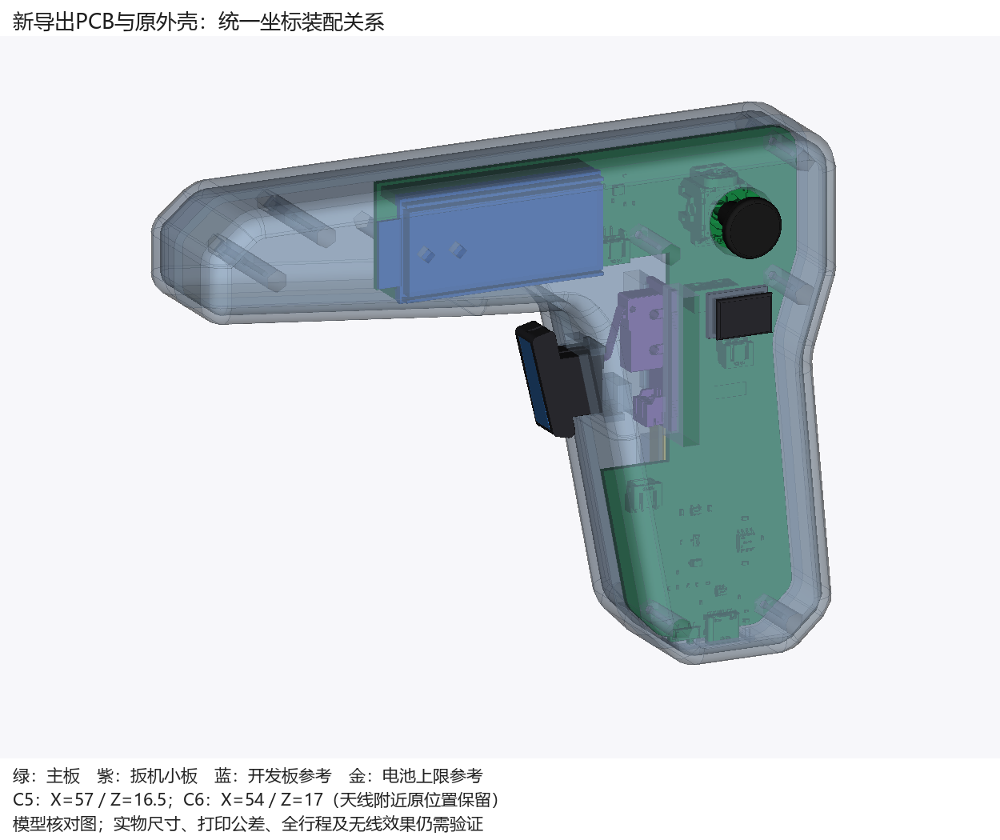
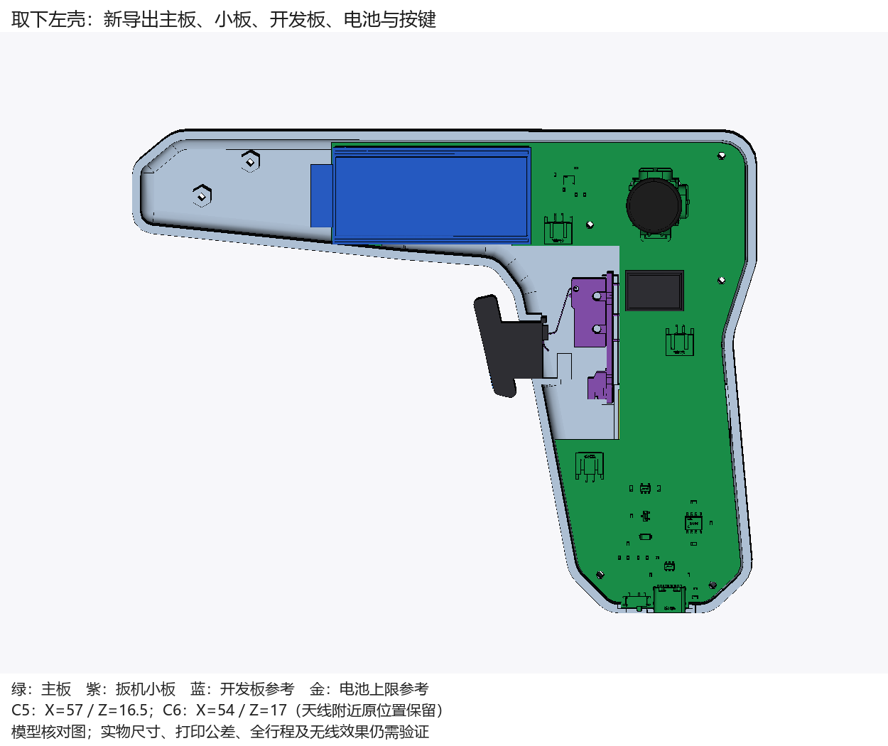
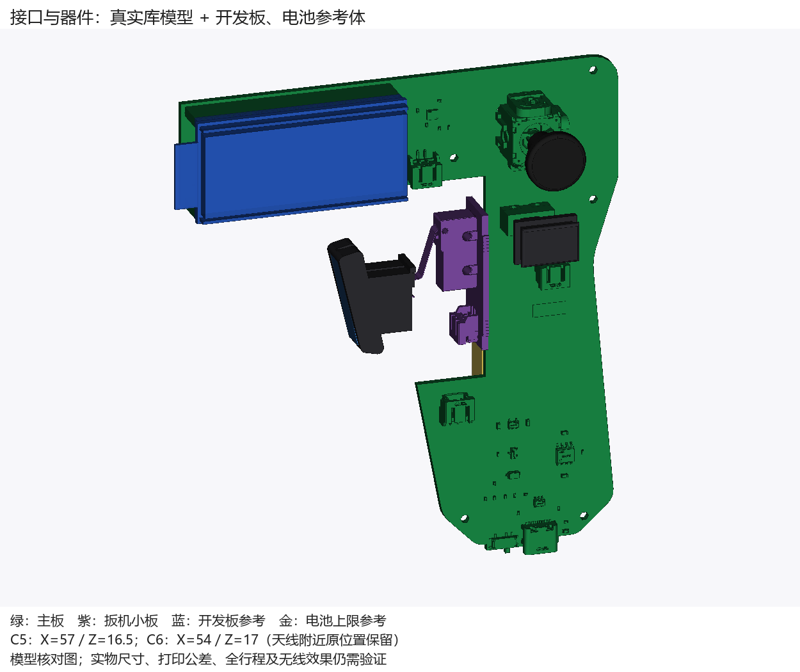
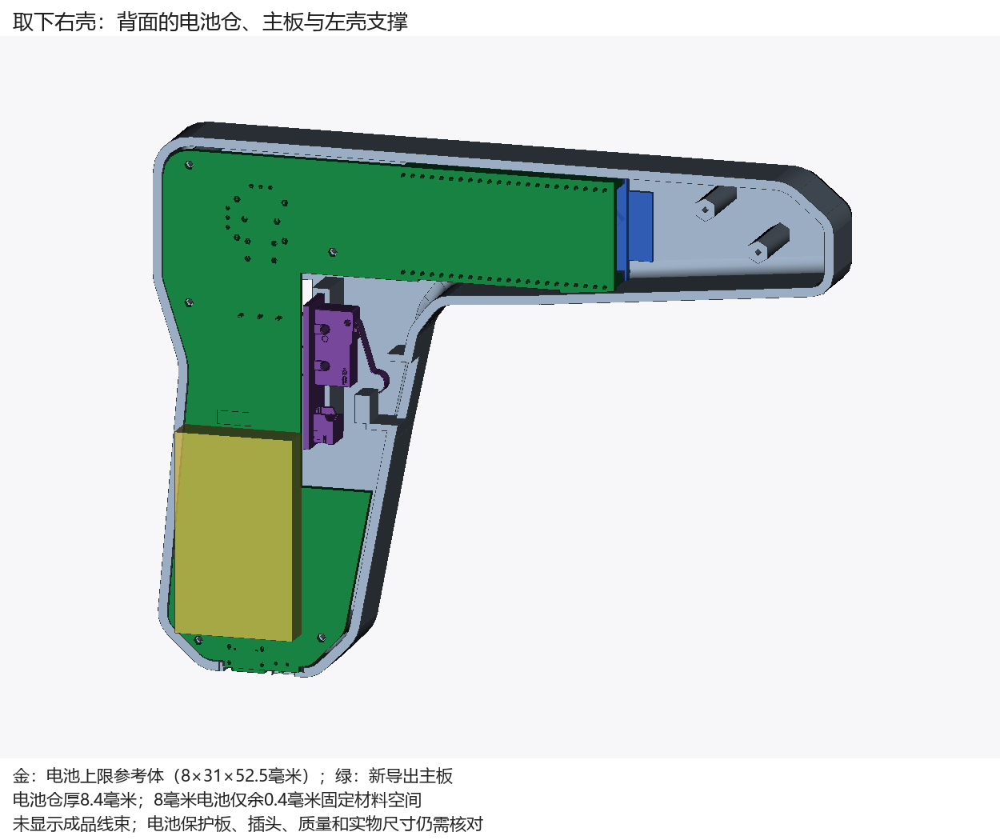
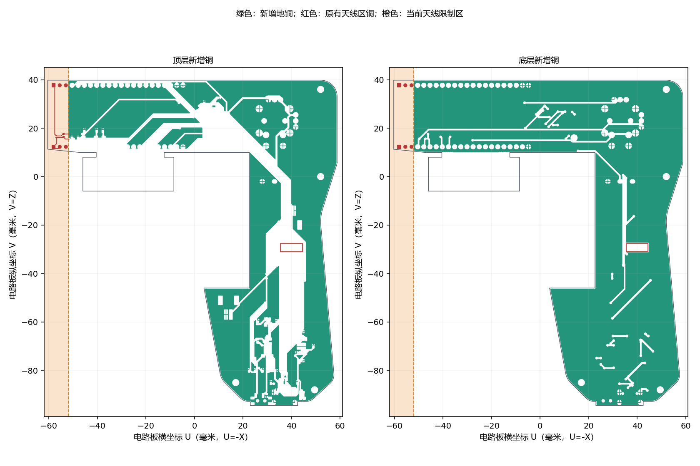

目的是让我通过程序持续设计、检查并联动实际电路板与外壳。原AI方案保留；这一页展示独立副本的真实软件、文件和模型核对。
| 环节 | 实际结果 |
|---|---|
| 原正式板 | 48器件、160已连接焊盘、575段线、95过孔，规则检查零错误；原理图与电路板编译网表一致。 |
| 程序完整写回 | 保存、关闭重开后路线几何与全部读到的属性一致，规则检查零错误。 |
| 主板双面地铜 | 创建、填充、保存和重开通过；原线、孔、盘、板框保持。新增铜不覆盖电池线槽。 |
| PCB与外壳 | 新导出实际电路板已按原坐标装配核对，五安装孔、插针、USB及所检查运动状态对应。 |
自动布线仍未全通过：原生算法留有6处未连接；其500段线写回时少了3条极短段。该诊断副本未替代原交付。天线附近原C5/C6布局、扳机极端公差下可能少0.1毫米行程，以及实物尺寸和打印配合仍需确认。
自动布线使用嘉立创原生算法的菜单兼容入口；覆铜和图元读写使用公开程序接口。不能由此推断全部软件功能已可调用。详细结论见 验证说明，电路证据见 电路核对汇总，模型证据见 新导出装配核对。





分支：codex/formal-validation。图片由实际实体模型生成，非软件截图。开发板、电池仍包含参考尺寸，本页不代表制造与实物验收。